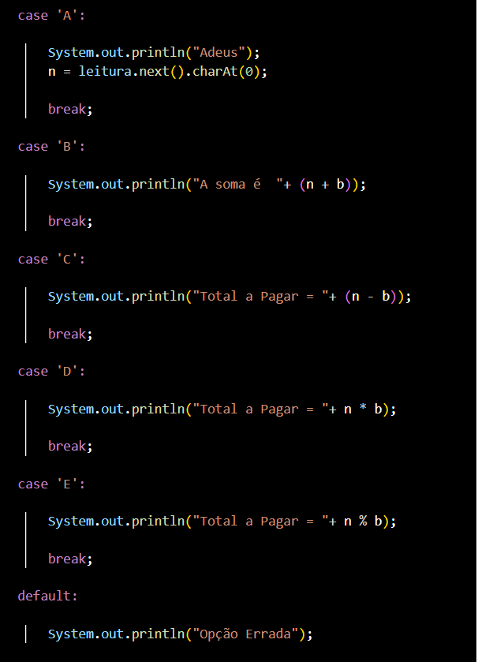
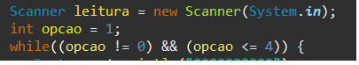
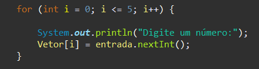
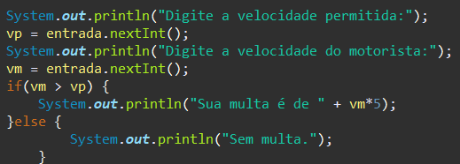
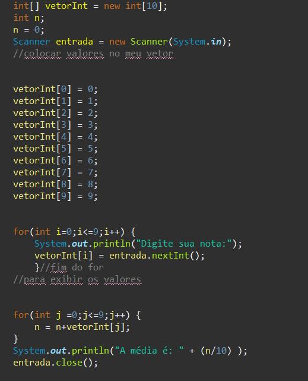
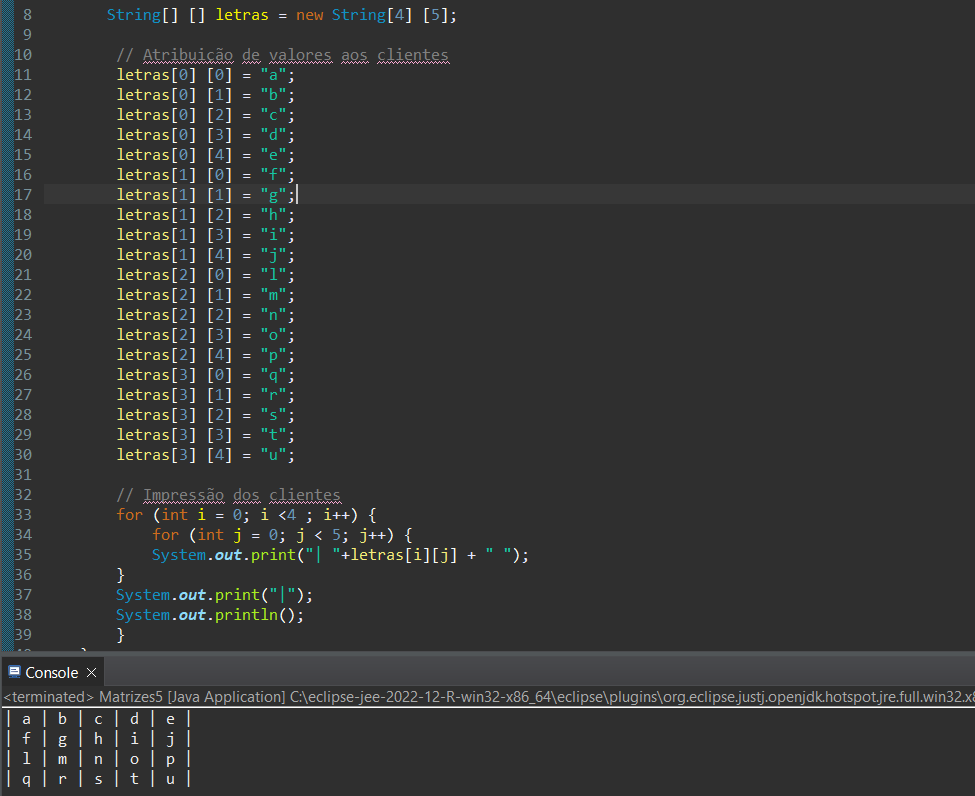
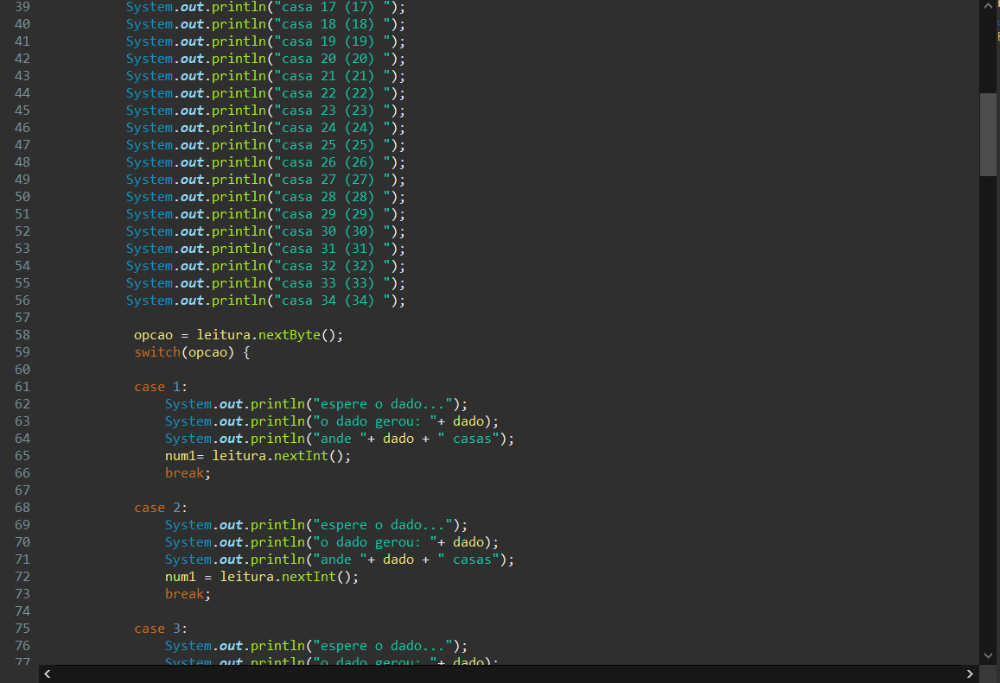
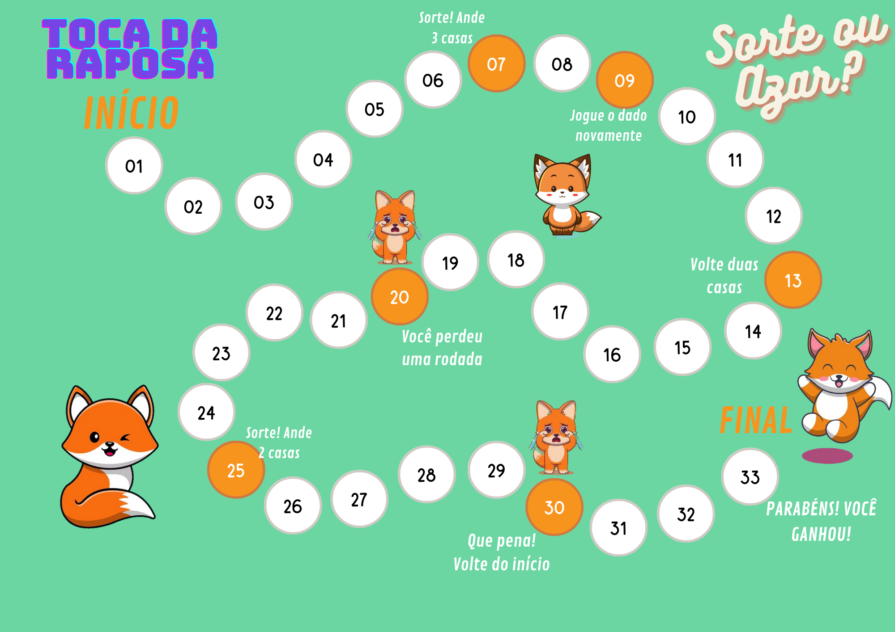

Fundamentos de Programação Orientada e Objeto
FPOO
Nessa disciplina, aprendemos sobre estruturas de repetição, como facilitar atividades do nosso cotidiano utilizando linguagem de programação. Dentre os aplicativos que utilizamos no curso, gostaria de falar a respeito de um específico: JAVA.
JAVA
Durante o curso, aprendemos a utilizar a Linguagem de Programação JAVA. É uma linguagem de programação rápida, segura e confiável para codificar tudo, desde aplicações móveis e software empresarial até aplicações de big data e tecnologias do servidor. Dentro dessa linguagem, temos:
package –pacote ao qual pertence o código sua localização
class – é a classe criada o nome da aplicação
public – É qualificador do método, que indica que ele pode ser acessado externamente a essa classe (outras classes podem usar este método).
static – Indica que o método deve ser compartilhado por todos os objetos que são criados a partir dessa classe.
void – É o valor de retorno do método. Quando não existe valor, ele retorna void (como se fosse um valor vazio).
main – Indica para o compilador o inicio do programa. É o método principal, em que todas as variáveis, argumentos e instruções são interpretados e processados para a execução do programa.
(String args[]) – É o argumento do método principal (main). É um vetor de strings formado por todos os argumentos passados ao programa na linha de comando do sistema operacional quando o programa é invocado.
PARA EXIBIR MENSAGEM:
System.out.println - Insere uma nova linha, deixando o marcador posicionado na linha abaixo.
System.out.print - Mantém o cursor na mesma linha. Geralmente são utilizadas sequências de escape para pular uma linha.
System.out.printf - Especifica o formato da entrada do tipo de valor, que deve ser o mesmo tipo de dados apontado na instrução. Se possuir alguma dúvida verifique a tabela acima dos tipos de dados que podem ser usados.
Dentre isso, temos estruturas específicas. São elas:

CASE
Usada para: escolher apenas um conjunto de ações dentre vários alternativos. Aqui o teste não é mais uma operação lógica: o próprio valor de algum dado ou resultado anterior (que pode ser de outros tipos além do lógico) é que vai determinar qual desses conjuntos de ações será executado
No exemplo apresentado, a proposta de atividade era fazer um programa para ler o código dos itens apresentados(cardápio de uma lanchonete) e as quantidades desejadas. Depois calcular e exibir o valor a ser pago por item (preço * quantidade) e o total geral do pedido, levando em consideração que o usuário diria quando o pedido finalizasse.

WHILE
Esta instrução é usada quando não sabemos quantas vezes um determinado bloco de instruções precisa ser repetido. Com ele, a execução das instruções vai continuar até que uma condição seja verdadeira.
Exemplo: serão impressos os valores de 1 a 4, e depois quando a variável possuir o valor 5, a condição do while será falso (false) e sua estrutura não é mais executada.

FOR
O for é uma estrutura de repetição na qual seu ciclo será executado por um tempo ou condição pré-determinados e em uma quantidade de vezes que determinamos. Quando utilizamos o for, precisamos de uma variável para auxiliar a controlar a quantidade de repetições a serem executadas. Essa variável é chamada de variável de controle e é declarada no primeiro argumento do for. O segundo argumento do for é utilizado para definir até quando o for será executado. Geralmente, trata-se de uma condição booleana em cima da variável de controle. O terceiro argumento indica o quanto a variável de controle será modificada no final de cada execução dentro do for.
No exemplo abaixo, enquanto os valores digitados forem menor ou igual a 5, o programa executará normalmente. Se o usuário digitar um valor maior do que 5, o programa não funcionará.

IF/ELSE
O if/else é uma estrutura de condição em que uma expressão booleana é analisada. Quando a condição que estiver dentro do if for verdadeira, ela é executada. Já o else é utilizado para definir o que é executado quando a condição analisada pelo if for falsa. Caso o if seja verdadeiro e, consequentemente executado, o else não é executado. O if pode ser utilizado em conjunto com o else ou até mesmo sozinho, caso necessário.
No exemplo abaixo, a proposta era que uma multa deveria ser aplicado se a velocidade do motorista fosse maior que a velocidade permitida. Senão, a multa não era necessária.

VETOR
Vetores são estruturas de dados que armazenam usualmente uma quantidade fixa de dados de um certo tipo; por esta razão, também são conhecidos como estruturas homogêneas de dados. Internamente, um vetor armazena diversos valores, cada um associado a um número que se refere à posição de armazenamento, e é conhecido como índice. Os vetores são estruturas indexadas, em que cada valor que pode ser armazenado em uma certa posição (índice) é chamado de elemento do vetor. Cada elemento do vetor pode ser utilizado individualmente de forma direta, ou seja, pode ser lido ou escrito diretamente, sem nenhuma regra ou ordem preestabelecida, fazendo dos vetores estruturas de dados de acesso aleatório.O número de posições de um vetor corresponde ao tamanho que ele tem; assim, um vetor de tamanho 10 tem esse número de elementos, isto é, pode armazenar até dez elementos distintos. Os diferentes elementos de um vetor são distinguidos unicamente pela posição que ocupam no vetor. Cada posição de um vetor é unicamente identificada por um valor inteiro positivo, linear e sequencialmente numerado.
No exemplo abaixo, a proposta era armazenar 10 notas dadas pelo usuário, e ao final dar a média das notas recebidas.

MATRIZ
Uma matriz é uma estrutura de dados em Java que permite armazenar uma coleção de valores de um mesmo tipo em uma estrutura de "tabela" que é composta por linhas e colunas. Cada célula da matriz é identificada por sua posição em relação à linha e à coluna que ela ocupa. A principal função de uma matriz é permitir que você armazene e manipule coleções de dados de maneira organizada.
No exemplo abaixo, a proposta era armazenar as letras do alfabeto de forma que ficassem em uma proporção de 5x4. Neste exemplo o usuário não precisa inserir nenhum valor.

JOGO DE TABULEIRO
Como um dos trabalhos, tivemos que realizar um jogo de tabuleiro utilizando vetores. No caso do meu grupo, utilizamos além de velores, a estrutura case.

